Transparent APNG previews (8-bit alpha). Full-size 576px and 160px sets;
each action also ships as GIF and alpha WebM in assets/.
One-shots (running, chasing, peeking) replay on loop after their first pass.
idle.png — breathing, blink, ear twitch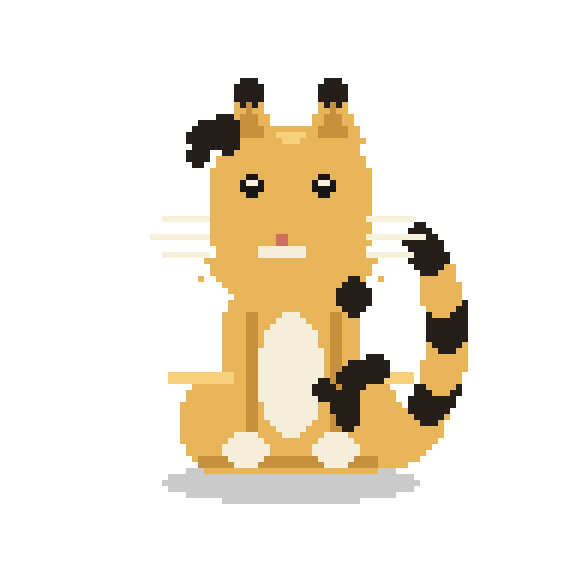
waving.png — stepped paw wave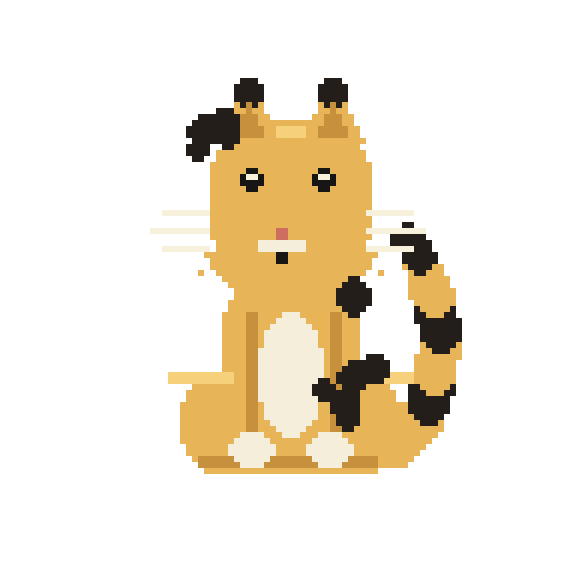
floating.png — weightless bob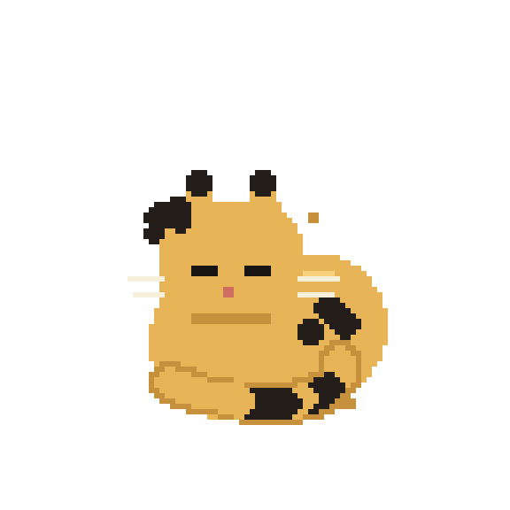
sleeping.png — curled coil + Zzzglitching.png — retro slice glitch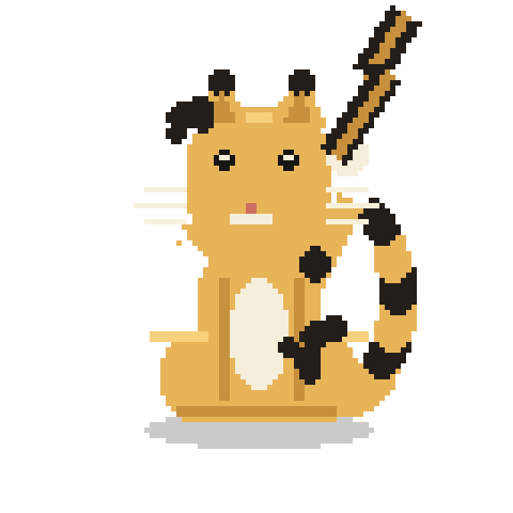
zapped.png — touches the bolt, gets zapped, goes back for morereading.png — red hardcover, page turns, glances up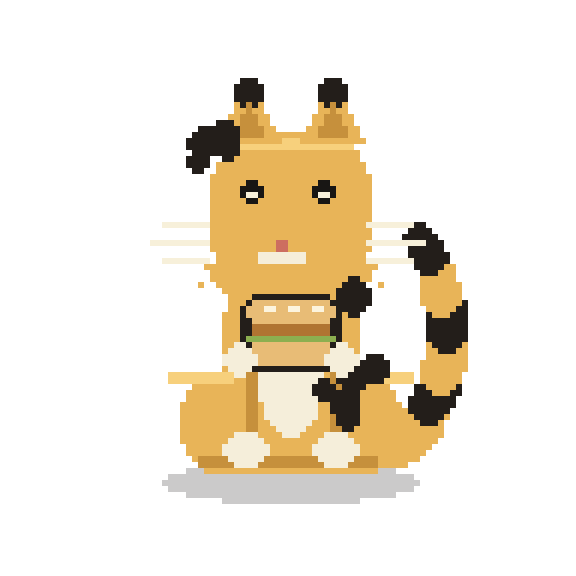
eating.png — holds the chicken sandwich up and chomps it, bite by bite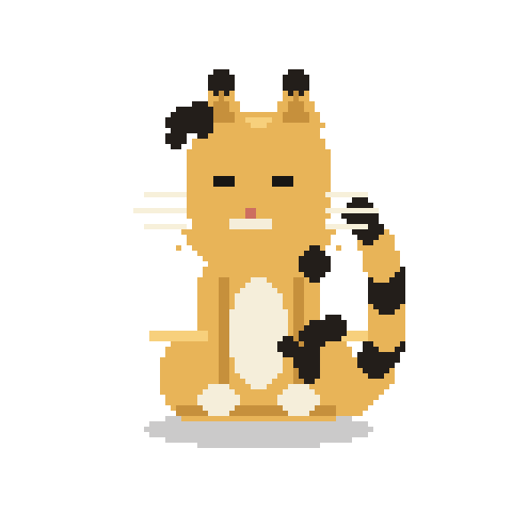
grooming.png — paw lick, tongue darts, cheek wipeboing.png — excited bounce: crouch, spring, hang, shake it off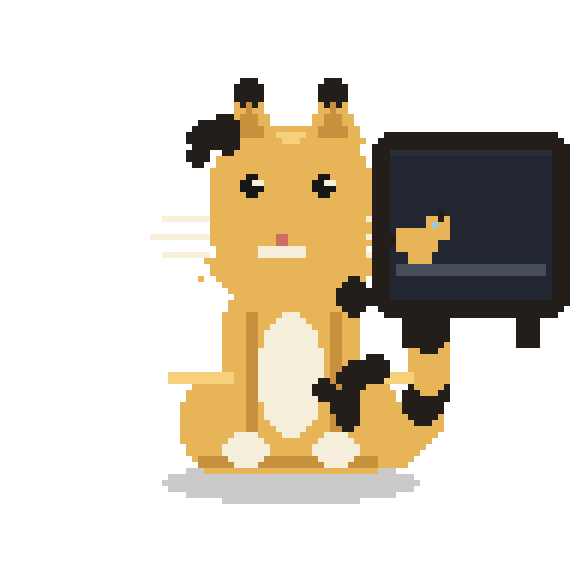
tv.png — channel zapping: cat show, aquarium, rocket launch (jump-scare), news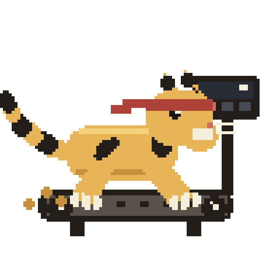
treadmill.png — gym session: jog, sprint, bonk, pant on the dead belt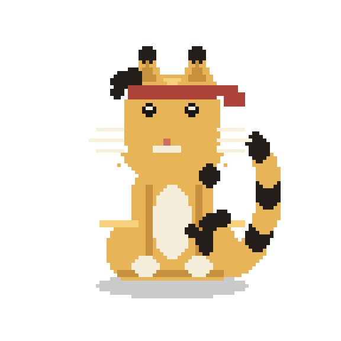
flexing.png — double-biceps with bumps, sparkle max-effort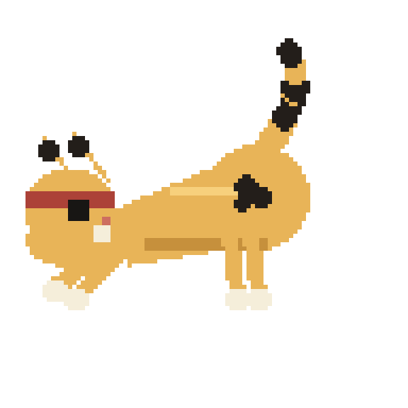
stretching.png — yoga flow: deep arch, tail up, sway into the dip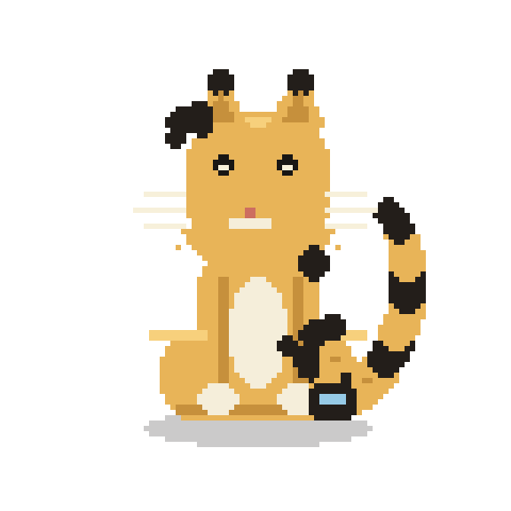
phone.png — ring ring… hello? … chats, gets shocked, waves bye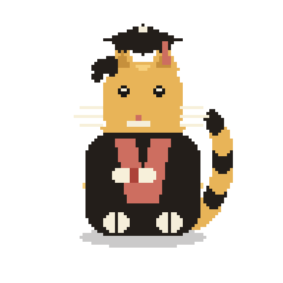
graduating.png — cap and gown, tassel swing, cap toss through the confetti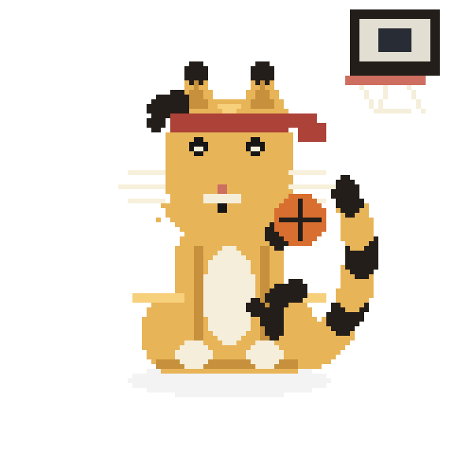
basketball.png — dribble, dribble, shoot — swish through the net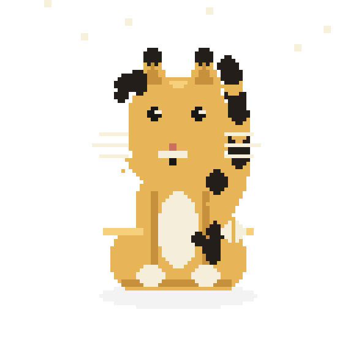
snowman.png — rolls, stacks, carrot nose, celebrates under the snow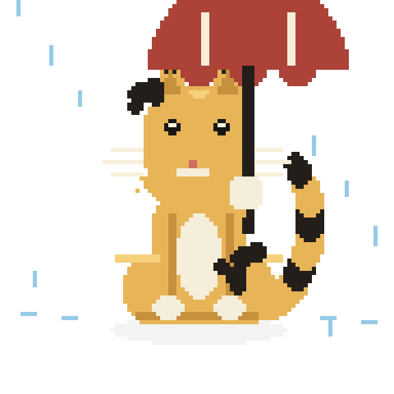
rain.png — red umbrella, tail drip, a drop boops the nose, shake it off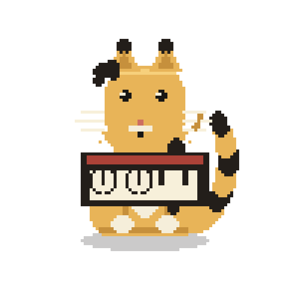
piano.png — paws on the keys, notes floating up, big crescendo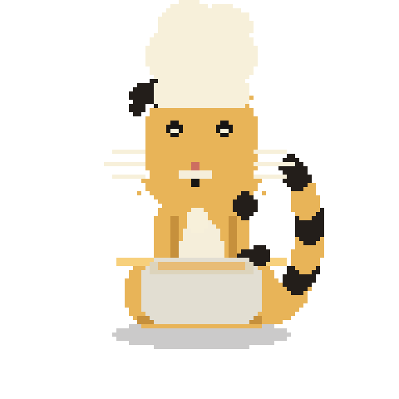
baking.png — toque on: crack, stir, sneak a lick, POOF — cake!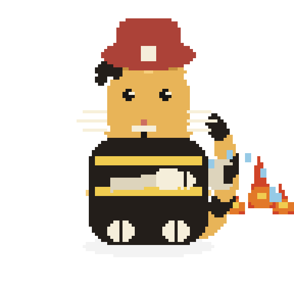
firefighter.png — hoses the blaze down to smoke… then it relights?!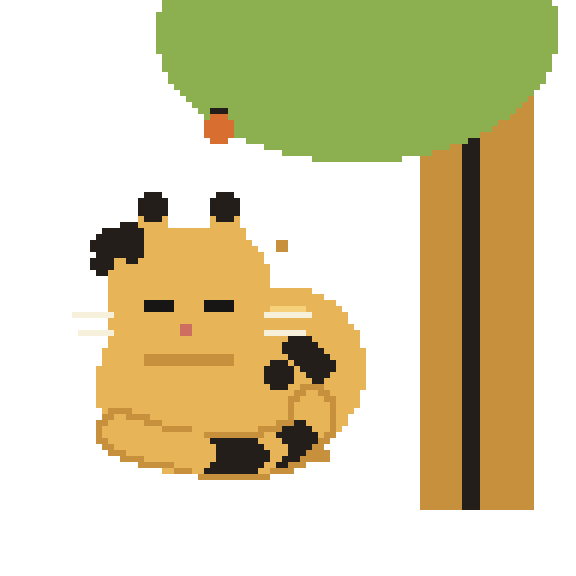
discovery.png — naps under the tree, apple bonks, ELECTRICITY discovered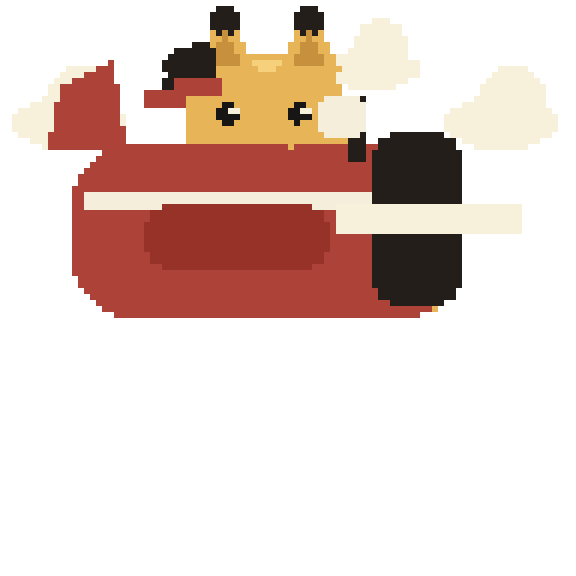
plane.png — weekend aviator in a tiny red plane, scarf in the wind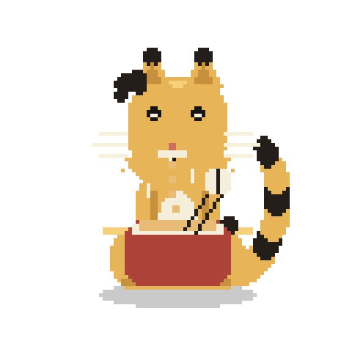
noodles.png — slurps the ramen shorter and shorter, pure happiness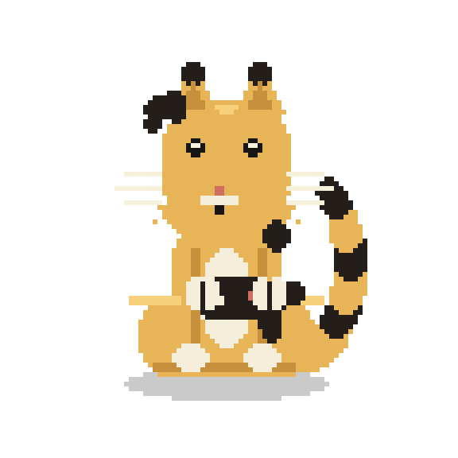
gaming.png — mashes the controller, clutch shock, WIN with confetti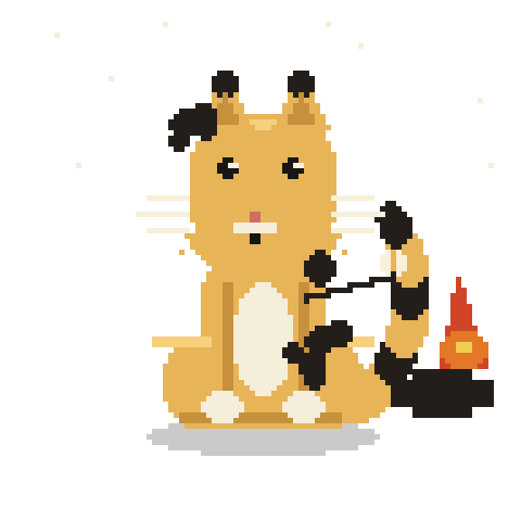
campfire.png — toasts a marshmallow under the stars, charred, eats it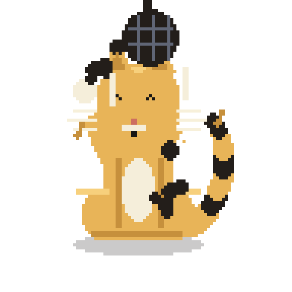
dance.png — disco ball, light beams, big side-to-side moves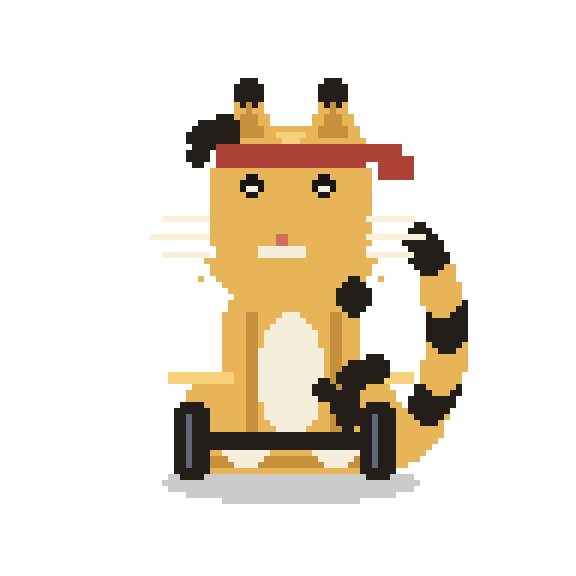
weightlifting.png — grip, clean, press overhead, hold the tremble, DROP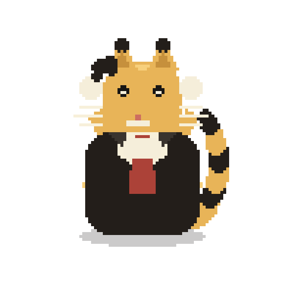
suit.png — adjusts the tie, shades on, strut, finger guns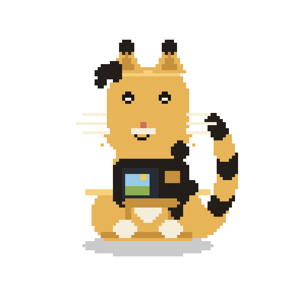
camera.png — raises the camera, FLASH, reviews the keep on the back screen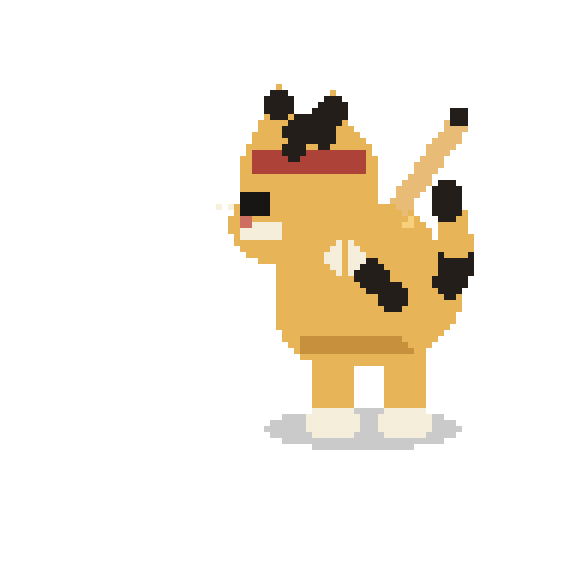
baseball.png — pitch, swing, CRACK — watches it fly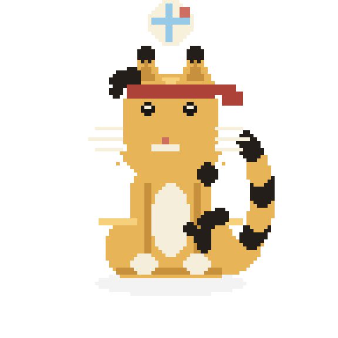
volleyball.png — bump, set, spike jumpchasing.png — toy mouse darts by, the cat blasts after itpeeking.png on light — asset's left edge = video frame edgepeeking.png on dark — keep it 10–15% of frame widthrunning.png — zoomies across, then the tired walk of shame: panting, tongue out_r twins)running_r.png — dash, right to leftchasing_r.png — mouse runs right to left, cat followspeeking_r.png — peeks from the right edge (asset's right edge = frame edge).png APNG — web pages, Notion, infographics (use this one).
.webm — Premiere / DaVinci / CapCut compositing (real alpha).
.gif — only when a tool accepts nothing else (jaggy 1-bit edges).